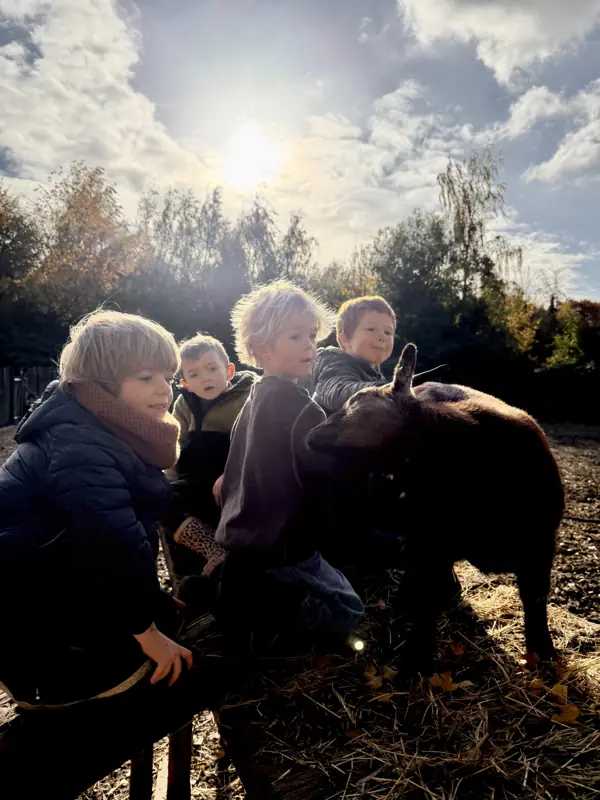

Kampen en losse dagen
Een week meeleven op de boerderij
In alle schoolvakanties kunnen kinderen hier een hele week of een paar losse dagen komen. Ze helpen bij de dieren, eten mee aan tafel en zijn de hele dag buiten.
Zo ziet een dag eruit
- 8u Brengen kan vanaf acht uur.
- 9u We starten bij de dieren: stallen open, kippen voederen, kijken wie er wakker is.
- 10u Samen fruit eten.
- 12u30 Een gezonde, warme lunch. Met groenten van de Zelfoogstboerderij, en de kinderen beleggen vaak zelf hun bord.
- Namiddag Een activiteit. Wie liever vrij speelt of een kamp bouwt, mag dat ook.
- 16u Ophalen, of opvang tot 18u.
Verder plannen we niet te veel. We laten de dagen ontstaan tussen de dieren, de seizoenen en alles wat de boerderij ons die week brengt.

Volgende vakanties
Kerstvakantie 2026
Per dag, op 21 tot 24 december en 28 tot 31 december. €55 per dag. Na je inschrijving laat ik weten of er nog plaats is. Pas daarna betaal je.
Inschrijven voor de kerstvakantie
Krokus, Pasen en zomer 2027
De weken en prijzen voor 2027 liggen nog niet vast. Laat je interesse weten, dan krijg je als eerste een seintje wanneer de inschrijvingen openen.
Goed om te weten
Kan mijn kind eerst één dagje proberen?
Zeker. Je kan eerst één dag boeken en daarna nog dagen bijnemen als er plaats is.
Hoe betaal ik?
Met een overschrijving op BE80 7340 7572 5077 (De Boer Gilles Mobiel vzw), met de naam van je kind en de dagen of de week erbij. Een volle week staat vast na betaling. Losse dagen bevestig ik eerst.
Mijn kind heeft een allergie of eet geen vlees.
Ik houd er zoveel mogelijk rekening mee. Op een pastadag kan ik niet voor iedereen apart koken, geef dan gerust iets mee. Bij een zware allergie, waarbij ook sporen een probleem zijn, geef je best elke dag eigen eten mee.
Wat trekt mijn kind aan?
Kleren die vuil mogen worden, laarzen en reservekledij. We zijn de hele dag buiten, ook als het regent. Er is een overdekte plek om te eten en te schuilen.
Is er altijd iemand bij de kinderen?
Ik begeleid de kampjes zelf. Bij grotere groepen komt er een extra begeleider bij, vooral voor het eten.